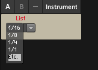

Allow *.axs *.axb to show up in favorites??
Improvements/Wishes for the patcher

toneburst
#124
The ability to to set range and step-size of custom object Parameters (as you can with Attributes) would be great. I know it's possible to post-process parameter values in the object itself, but It would be nice not to have to do that, and also (more importantly), it would be great if the values on the control matched the values used internally (though I'm aware this is only an issue within the Patcher itself, but still...).
a|x
johannes
#125
What are the use-cases for step-size? What 'd be the expected behavior when such parameter is mapped to a midi CC?
One "difficult case" is BPM controls, people often use a "round" bpm number, below 40 does not make much sense but an upper limit of 40+127 (when increments are mapped to midi CC increments) would be 167 bpm, too low as an upper limit.
Avoiding parameter re-computations in dsp code is certainly a goal, and frequently used, but currently not very flexible or documented well. Also UI (unit) values are not flexible in object configuration.
There are multiple things that I consider refactoring about parameters, sub-ranging for midi-mapping, inlet-parameter duality, user-selectable ranges, but these changes needs a lot of care, potentially conflicting requirements etc. First priority is going from the current 'test' releases back to a stable mainstream release...
anon5189335
#126
An object that has the option to show tekst instead of just values.
Something like Reaktors List object:
{kind=link}
Maybe a version with drop down menu:

toneburst
#127
I guess the argument there is that since the Axolotl doesn't have a screen, such a feature is only really of use within the Patcher application. That's not the case with Reaktor, since a Reaktor Ensemble or Instrument can have whatever GUI you choose, so the need for a wide variety of control interfaces is stronger.
a|x
toneburst
#128
Thanks for your thoughtful reply, johannes.
I mentioned this with a specific use-case in mind, in fact. As you know, I've been working on my first custom Axolotl Object. I'm very pleased to have got it working, but I'd like to extent it in two specific ways:
- I'd like to set a pattern-length, as a Parameter, rather than an Attribute, and
- I'd like to set a step-offset value, again as a teatime-tweakable Parameter
In both cases, it would be useful to have the controls actually show integer values in a particular range (2 to 128, and 0 to 128, respectively). It just feels weird to me to have some arbitrary number displayed on the UI element in this case. BPM, as you mention, is another case in point.
a|x
johannes
#129
oh but integer parameters are implemented
in XML:
<params>
<int32 name="value">
<MinValue i="0"/>
<MaxValue i="16"/>
</int32>
</params>This does not handle situations where one parameter range depends on another, like limiting step-offset to be less than the parameter length. That 'd be tricky to implement...
toneburst
#131
I think the only sensible way to do this, from a user's point of view, is for the whole range of the CC (0-127) to map to the whole range of the control (whatever it is). I realise this will mean some conversion will have to be carried out.
a|x
anon5189335
#132
i
Yes true. But I still think it would be a nice object to have. I use Axoloti with the patcher running most of the time. I think a lot of people do. I havent really used mine in stand alone mode yet, always connected to a computer. So for me it would be very valuable.
But yeah, there are objects that I would consider more important and more fun to have 
toneburst
#133
How about some kind of indication of a percentage of Axoloti processor resources each object will use?
a|x
johannes
#134
Not so easy, this can depend on context (leaving certain inlets/outlets unconnected can lower the load), and object settings (for example polyphony).
toneburst
#135
Understood. Maybe just some simple graphic device or colour to indicate more/less processor-heavy objects...
a|x
philoop
#136
it would be good if the console would say how much
sram is still free, thats should be easier..
toneburst
#137
This could be an object that just sends the index of the selected item as an integer from its outlet.
I guess typically, you'd connect one of these to a Multiplexer or Demultiplexer object.
a|x
toneburst
#138
How about Nord Modular-style 'Morph Groups' that could control a number of different parameters at the same time, with per-parameter ranges.
This may already be possible. If so, I'd love to know how.
Alternatively (and this would be more flexible), a way of morphing between whole presets. I realise this is probably too ambitious, given the hardware limitations, but it would be very cool if it were possible, and would open up all kinds of expressive possibilities...
a|x
computertablelamp
#139
More randomization, the one thing I loved from the Nord Modular was patch mutations. Allowing you discover sounds in your own patches you might otherwise never make, maybe to make it easy you could exclude knobs that are already in a preset? similar to how the Nord lets you exclude selected objects from mutation. This way you can keep things like gain from randomizing to a high number and shredding your ears.
toneburst
#140
+1 for that.
Mutation and Randomisation could just operate in the patcher, so there wouldn't be any hardware overhead for the Axoloti Core.
You'd Randomise or Mutate, then save to a preset, I guess.
a|x